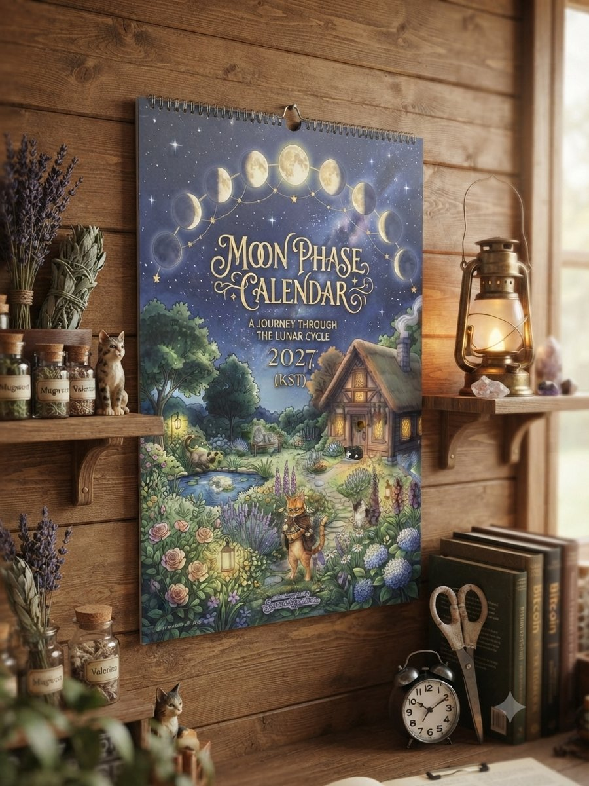
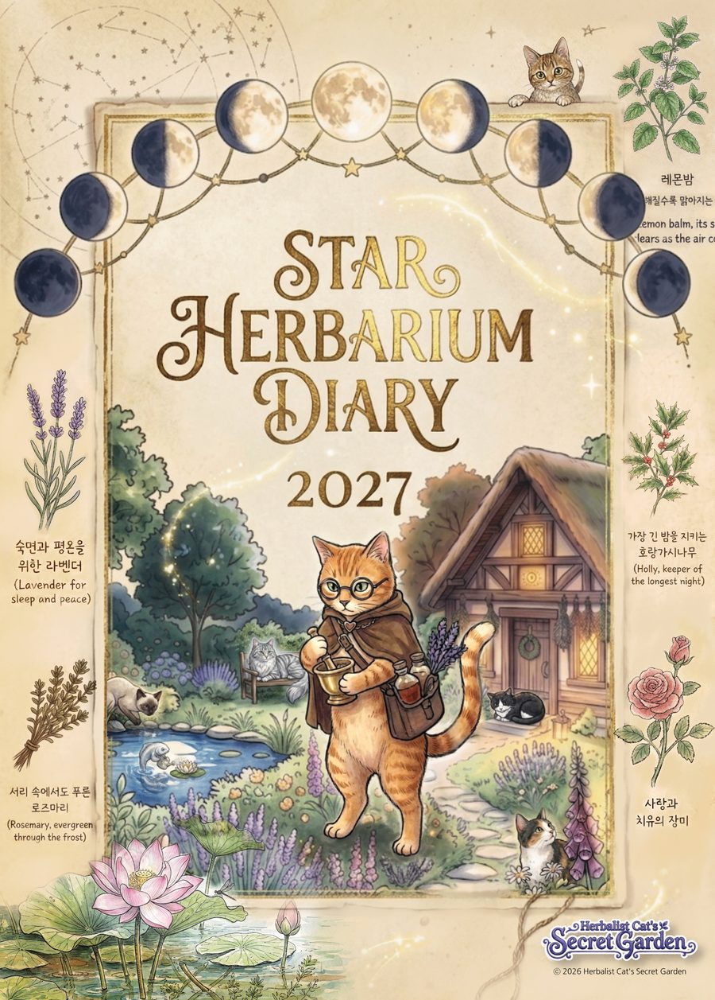
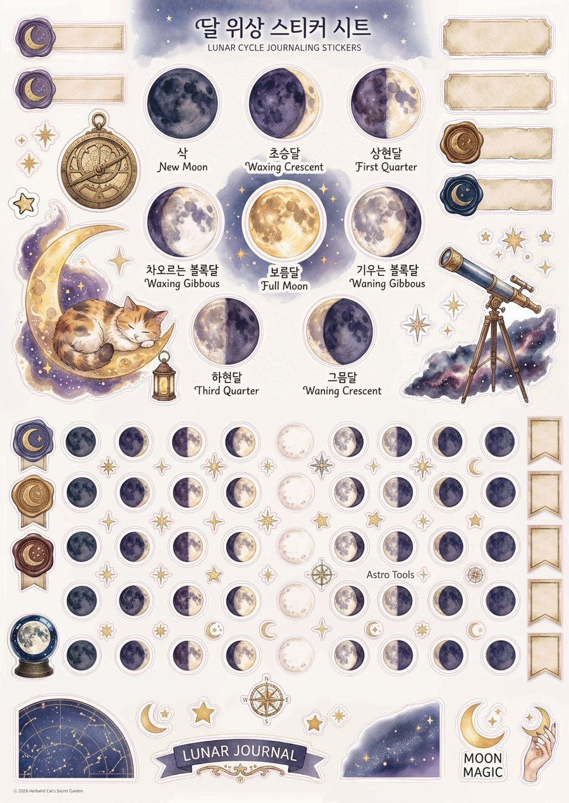

Works
작품
From the garden, into your hands
정원에서 자라난 이야기가 게임으로, 캘린더로, 다이어리로, 그리고 곧 한 권의 소설로 이어집니다.
Browser Game
고양이 약초사의 비밀 정원
Herbalist Cat's Secret Garden
파노라마로 펼쳐진 정원을 탐험하며 약초를 채집하고, 손님을 맞이하고, 제자들과의 관계를 쌓아가는 브라우저 게임입니다. 낮과 밤이 바뀌고, 계절마다 정원의 표정이 달라집니다.
- PlatformWeb Browser
- Style수채화 일러스트
- Status서비스 중

Calendar · 2027
Moon Phase Calendar
A Journey Through the Lunar Cycle
열두 달, 열두 개의 정원 풍경을 담은 풀컬러 캘린더입니다. 그리드 없이 심플한 문페이즈 아이콘으로, 그날 밤하늘의 달 모양을 함께 표시했습니다. 탁상형과 벽걸이형 두 가지로 제작을 마쳤습니다.
- 탁상형208×148mm
- 벽걸이형300×440mm
- Status제작 완료 · 텀블벅 펀딩 오픈 예정

Diary · 2027
Star Herbarium Diary
A Living Herbarium
열두 달의 약초를 표본첩처럼 기록한 다이어리입니다. 다이어리보다 아트북에 가까운 디테일로, 걸어두거나 책상 위에 두는 것만으로도 소장 가치가 있습니다.
- 사이즈A5 (148×210mm)
- 표지하드커버 · 무광코팅
- 페이지147p
- Status제작 완료 · 텀블벅 펀딩 오픈 예정

Sticker Set
정원 다꾸 스티커 세트
Garden Journaling Sticker Set
다이어리와 함께 쓰도록 만든 세 장의 스티커 시트입니다. 바바와 정원 소품을 담은 캐릭터 시트, 달의 여덟 위상을 담은 문페이즈 시트, 그리고 정원의 자잘한 순간들을 담은 코지 모먼트 시트로 구성했습니다.
- 구성3매 세트
- 사이즈A4
- Status제작 완료 · 텀블벅 펀딩 오픈 예정
Novel
바바 이야기
The story of the one who stayed
300년 전 스스로 정원에 갇히기를 택한 바바. 그 이유의 전모는 아직 아무에게도 밝혀지지 않았습니다. 사건을 요약하는 대신 감정에 머무는, 어른을 위한 다크-코지 판타지 장편소설로 곧 찾아옵니다.
- 형식장편소설
- Status집필 중